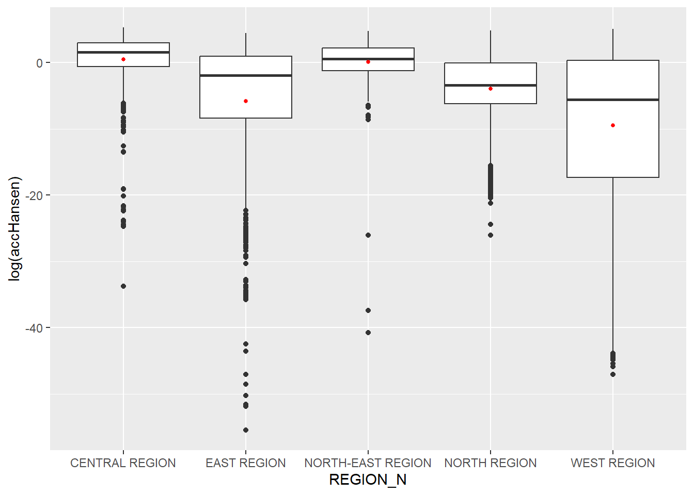

pacman::p_load(tmap, SpatialAcc, sf,
ggstatsplot, reshape2,
tidyverse)Module 3: Geographic Accessibility of Hawker Centres
1 Background & Introduction
The accessibility of hawker centres impacts both the quality of life of residents and the economic viability of hawkers. In this module, we will explore the geographic accessibility of hawker centres in Singapore using three different methods: Hansen’s Accessibility Model, the Kernel Density to Service Areas (KD2SFCA) Model, and the Spatial Accessibility Model (SAM).
1.1 Data Explanation
The data used in this module consists of the following:
- Geospatial Data
- MP14_SUBZONE_NO_SEA_PL.shp: A shapefile containing the subzones of Singapore.
- hexagons.shp: A shapefile containing hexagons that will be used to represent the study area.
- hawkers_all_regions.rds: A spatial dataframe containing the locations of all hawker centres and hawker stalls in Singapore.
- Aspatial Data
- OD_Matrix.csv: A matrix containing the travel times between different locations in Singapore.
2 Data Import & Preparation
2.1 Import of Libraries
2.2 Import of Data
2.2.1 Importing of Geospatial Data
mpsz <- st_read("data/MP14_SUBZONE_NO_SEA_PL.shp")Reading layer `MP14_SUBZONE_NO_SEA_PL' from data source
`C:\aidan445\IS415-GAA\Take-home_Ex\Take-home_Ex03\data\MP14_SUBZONE_NO_SEA_PL.shp'
using driver `ESRI Shapefile'
Simple feature collection with 323 features and 15 fields
Geometry type: MULTIPOLYGON
Dimension: XY
Bounding box: xmin: 2667.538 ymin: 15748.72 xmax: 56396.44 ymax: 50256.33
Projected CRS: SVY21hexagons <- st_read("data/hexagons.shp")Reading layer `hexagons' from data source
`C:\aidan445\IS415-GAA\Take-home_Ex\Take-home_Ex03\data\hexagons.shp'
using driver `ESRI Shapefile'
Simple feature collection with 3125 features and 6 fields
Geometry type: POLYGON
Dimension: XY
Bounding box: xmin: 2667.538 ymin: 21506.33 xmax: 50010.26 ymax: 50256.33
Projected CRS: SVY21 / Singapore TMNote that the layer for hawker_stalls is an rds file previously written from Module 2 that is being reused.
hawker_stalls <- read_rds("data/hawkers_all_regions.rds")2.2.2 Importing of Aspatial Data
OD_Matrix <- read_csv("data/OD_Matrix.csv", skip = 0)Rows: 375000 Columns: 6
── Column specification ────────────────────────────────────────────────────────
Delimiter: ","
dbl (6): origin_id, destination_id, entry_cost, network_cost, exit_cost, tot...
ℹ Use `spec()` to retrieve the full column specification for this data.
ℹ Specify the column types or set `show_col_types = FALSE` to quiet this message.3 Data Wrangling
3.1 Geospatial Data Cleaning
3.1.1 Updating CRS Information
To ensure that all the geospatial data is in the same CRS, we will set the CRS information of the mpsz, hexagons, and hawker_stalls sf dataframes to use the same EPSG code (3414).
mpsz <- st_transform(mpsz, crs = 3414)
hexagons <- st_transform(hexagons, crs = 3414)
hawker_stalls <- st_transform(hawker_stalls, crs = 3414)Check that the CRS information has been updated:
st_crs(mpsz)Coordinate Reference System:
User input: EPSG:3414
wkt:
PROJCRS["SVY21 / Singapore TM",
BASEGEOGCRS["SVY21",
DATUM["SVY21",
ELLIPSOID["WGS 84",6378137,298.257223563,
LENGTHUNIT["metre",1]]],
PRIMEM["Greenwich",0,
ANGLEUNIT["degree",0.0174532925199433]],
ID["EPSG",4757]],
CONVERSION["Singapore Transverse Mercator",
METHOD["Transverse Mercator",
ID["EPSG",9807]],
PARAMETER["Latitude of natural origin",1.36666666666667,
ANGLEUNIT["degree",0.0174532925199433],
ID["EPSG",8801]],
PARAMETER["Longitude of natural origin",103.833333333333,
ANGLEUNIT["degree",0.0174532925199433],
ID["EPSG",8802]],
PARAMETER["Scale factor at natural origin",1,
SCALEUNIT["unity",1],
ID["EPSG",8805]],
PARAMETER["False easting",28001.642,
LENGTHUNIT["metre",1],
ID["EPSG",8806]],
PARAMETER["False northing",38744.572,
LENGTHUNIT["metre",1],
ID["EPSG",8807]]],
CS[Cartesian,2],
AXIS["northing (N)",north,
ORDER[1],
LENGTHUNIT["metre",1]],
AXIS["easting (E)",east,
ORDER[2],
LENGTHUNIT["metre",1]],
USAGE[
SCOPE["Cadastre, engineering survey, topographic mapping."],
AREA["Singapore - onshore and offshore."],
BBOX[1.13,103.59,1.47,104.07]],
ID["EPSG",3414]]st_crs(hexagons)Coordinate Reference System:
User input: EPSG:3414
wkt:
PROJCRS["SVY21 / Singapore TM",
BASEGEOGCRS["SVY21",
DATUM["SVY21",
ELLIPSOID["WGS 84",6378137,298.257223563,
LENGTHUNIT["metre",1]]],
PRIMEM["Greenwich",0,
ANGLEUNIT["degree",0.0174532925199433]],
ID["EPSG",4757]],
CONVERSION["Singapore Transverse Mercator",
METHOD["Transverse Mercator",
ID["EPSG",9807]],
PARAMETER["Latitude of natural origin",1.36666666666667,
ANGLEUNIT["degree",0.0174532925199433],
ID["EPSG",8801]],
PARAMETER["Longitude of natural origin",103.833333333333,
ANGLEUNIT["degree",0.0174532925199433],
ID["EPSG",8802]],
PARAMETER["Scale factor at natural origin",1,
SCALEUNIT["unity",1],
ID["EPSG",8805]],
PARAMETER["False easting",28001.642,
LENGTHUNIT["metre",1],
ID["EPSG",8806]],
PARAMETER["False northing",38744.572,
LENGTHUNIT["metre",1],
ID["EPSG",8807]]],
CS[Cartesian,2],
AXIS["northing (N)",north,
ORDER[1],
LENGTHUNIT["metre",1]],
AXIS["easting (E)",east,
ORDER[2],
LENGTHUNIT["metre",1]],
USAGE[
SCOPE["Cadastre, engineering survey, topographic mapping."],
AREA["Singapore - onshore and offshore."],
BBOX[1.13,103.59,1.47,104.07]],
ID["EPSG",3414]]st_crs(hawker_stalls)Coordinate Reference System:
User input: EPSG:3414
wkt:
PROJCRS["SVY21 / Singapore TM",
BASEGEOGCRS["SVY21",
DATUM["SVY21",
ELLIPSOID["WGS 84",6378137,298.257223563,
LENGTHUNIT["metre",1]]],
PRIMEM["Greenwich",0,
ANGLEUNIT["degree",0.0174532925199433]],
ID["EPSG",4757]],
CONVERSION["Singapore Transverse Mercator",
METHOD["Transverse Mercator",
ID["EPSG",9807]],
PARAMETER["Latitude of natural origin",1.36666666666667,
ANGLEUNIT["degree",0.0174532925199433],
ID["EPSG",8801]],
PARAMETER["Longitude of natural origin",103.833333333333,
ANGLEUNIT["degree",0.0174532925199433],
ID["EPSG",8802]],
PARAMETER["Scale factor at natural origin",1,
SCALEUNIT["unity",1],
ID["EPSG",8805]],
PARAMETER["False easting",28001.642,
LENGTHUNIT["metre",1],
ID["EPSG",8806]],
PARAMETER["False northing",38744.572,
LENGTHUNIT["metre",1],
ID["EPSG",8807]]],
CS[Cartesian,2],
AXIS["northing (N)",north,
ORDER[1],
LENGTHUNIT["metre",1]],
AXIS["easting (E)",east,
ORDER[2],
LENGTHUNIT["metre",1]],
USAGE[
SCOPE["Cadastre, engineering survey, topographic mapping."],
AREA["Singapore - onshore and offshore."],
BBOX[1.13,103.59,1.47,104.07]],
ID["EPSG",3414]]3.1.2 Consolidating Hawker Locations
As we are dealing only with the hawker centres themselves and not the indivudual stalls, we can group the hawker centres by the column “Postal Code”, thus removing the column “Hawker Centre Stalls” while preserving all the remaining columns.
hawker_centres <- hawker_stalls %>%
select(-`Hawker Centre Stalls`) %>%
group_by(`Postal Code`) %>%
summarise_all(first)3.1.3 Preparing hawker_centres via mutate()
We will add 2 new fields to hawker_centres sf dataframe: a unique identifier “fid” in the first column, and a new field “capacity” in the last column. We will assume the value of 100 as we do not have access to the actual capacity of each hawker centre.
hawker_centres <- hawker_centres %>%
mutate(fid = row_number(),
capacity = 100) %>%
select(fid, everything())3.1.4 Preparing hexagons via mutaute()
In a similar way to hawker_centres, we will add a new field “demand” to hexagons sf dataframe. Similarly, we will assume the value of 100 as we do not have access to the actual demand of each hexagon.
hexagons <- hexagons %>%
mutate(demand = 100)3.2 Aspatial Data Cleaning
3.2.1 Tidying Distance Matrix
We will make use of the tidyr package function pivot_wider() to organise the OD_Matrix into column representation with rows representing origins and columns representing destinations.
distmat <- OD_Matrix %>%
select(origin_id, destination_id, total_cost) %>%
pivot_wider(names_from = destination_id, values_from = total_cost) %>%
select(-origin_id)We must also convert the distances in distmat dataframe to kilometre values as the map projection of Singapore that we will use later is in kilometres.
distmat_km <- as.matrix(distmat/1000)4 Hansen’s Accessibility Model
4.1 Computing Hansen’s Accessibility
The following code computes the accessibility scores for each hexagon using Hansen’s method. The function ac() from the SpatialAcc package is used to calculate the accessibility scores.
acc_Hansen <- data.frame(ac(hexagons$demand,
hawker_centres$capacity,
distmat_km,
power = 2,
family = "Hansen"))Warning in n * exp(-power * D): longer object length is not a multiple of
shorter object lengthcolnames(acc_Hansen) <- "accHansen"
acc_Hansen <- tbl_df(acc_Hansen)Warning: `tbl_df()` was deprecated in dplyr 1.0.0.
ℹ Please use `tibble::as_tibble()` instead.hexagon_Hansen <- bind_cols(hexagons, acc_Hansen)4.2 Visualising Hansen’s Accessibility
We use st_bbox() to extract the bounding box of the hexagons layer to set the bounding box of the map.
mapex <- st_bbox(hexagons)We then use the tmap package to create a thematic map of the accessibility scores of the hexagons. The map is overlaid with the locations of the hawker centres.
tmap_mode("plot")tmap mode set to plottingtm_shape(hexagon_Hansen,
bbox = mapex) +
tm_fill(col = "accHansen",
n = 10,
style = "quantile",
border.col = "black",
border.lwd = 1,
palette = "viridis") +
tm_shape(hawker_centres) +
tm_symbols(size = 0.1, col = "red") +
tm_layout(main.title = "Hawker Centre Accessibility: Hansen's Method",
main.title.position = "center",
main.title.size = 1,
legend.outside = FALSE,
legend.height = 0.25,
legend.width = 0.4,
legend.format = list(digits = 4),
legend.position = c("right", "top"),
frame = TRUE) +
tm_scale_bar(width = 0.15) +
tm_grid(lwd = 0.1, alpha = 0.5)4.3 Statistical Graphic Visualisation
We can overlay the mpsz layer to derive the planning regions for comparison of each of the Central, East, North-East, North and West regions.
hexagon_Hansen_mpsz <- st_join(hexagon_Hansen, mpsz,
join = st_intersects)ggplot(data=hexagon_Hansen_mpsz,
aes(y = log(accHansen),
x= REGION_N)) +
geom_boxplot() +
geom_point(stat="summary",
fun.y="mean",
colour ="red",
size=1) +
theme(legend.position = "top",
legend.key.width = unit(0.5, "cm"))Warning in geom_point(stat = "summary", fun.y = "mean", colour = "red", :
Ignoring unknown parameters: `fun.y`No summary function supplied, defaulting to `mean_se()`
The graph shows the distribution of Hansen’s accessibility scores across the different planning regions. The red dots represent the mean accessibility score for each region. As expected from the high number of hawker centres in the central region, the mean accessibility score for this region is the highest.
5 KD2SFCA Accessibility Model
5.1 Computing KD2SFCA’s Accessibility
We now repeat the analysis for the KD2SFCA model.
acc_KD2SFCA <- data.frame(ac(hexagons$demand,
hawker_centres$capacity,
distmat_km,
d0 = 50,
power = 2,
family = "KD2SFCA"))Warning in n/apply(step1, 2, sum): longer object length is not a multiple of
shorter object lengthWarning in Rj * t(exp(-D^power)): longer object length is not a multiple of
shorter object lengthcolnames(acc_KD2SFCA) <- "accKD2SFCA"
acc_KD2SFCA <- tbl_df(acc_KD2SFCA)Warning: `tbl_df()` was deprecated in dplyr 1.0.0.
ℹ Please use `tibble::as_tibble()` instead.hexagon_KD2SFCA <- bind_cols(hexagons, acc_KD2SFCA)5.2 Visualising KD2SFCA’s Accessibility
tmap_mode("plot")tmap mode set to plottingtm_shape(hexagon_KD2SFCA,
bbox = mapex) +
tm_fill(col = "accKD2SFCA",
n = 10,
style = "quantile",
border.col = "black",
border.lwd = 1,
palette = "viridis") +
tm_shape(hawker_centres) +
tm_symbols(size = 0.1, col = "red") +
tm_layout(main.title = "Hawker Centre Accessibility: KD2SFCA Method",
main.title.position = "center",
main.title.size = 1,
legend.outside = FALSE,
legend.height = 0.25,
legend.width = 0.4,
legend.format = list(digits = 4),
legend.position = c("right", "top"),
frame = TRUE) +
tm_scale_bar(width = 0.15) +
tm_grid(lwd = 0.1, alpha = 0.5)5.3 Statistical Graphic Visualisation
Again, let us repeat the process to derive the boxplot for the KD2SFCA model.
hexagon_KD2SFCA_mpsz <- st_join(hexagon_KD2SFCA, mpsz,
join = st_intersects)ggplot(data=hexagon_KD2SFCA_mpsz,
aes(y = log(accKD2SFCA),
x= REGION_N)) +
geom_boxplot() +
geom_point(stat="summary",
fun.y="mean",
colour ="red",
size=1) +
theme(legend.position = "top",
legend.key.width = unit(0.5, "cm"))Warning in geom_point(stat = "summary", fun.y = "mean", colour = "red", :
Ignoring unknown parameters: `fun.y`Warning: Removed 15 rows containing non-finite outside the scale range
(`stat_boxplot()`).Warning: Removed 15 rows containing non-finite outside the scale range
(`stat_summary()`).No summary function supplied, defaulting to `mean_se()`
6 SAM’s Accessibility Model
6.1 Computing SAM’s Accessibility
Finally, we can compute the accessibility scores for the SAM model.
acc_SAM <- data.frame(ac(hexagons$demand,
hawker_centres$capacity,
distmat_km,
d0 = 50,
power = 2,
family = "SAM"))Warning in n/t(p * (D^power)): longer object length is not a multiple of
shorter object lengthcolnames(acc_SAM) <- "accSAM"
acc_SAM <- tbl_df(acc_SAM)Warning: `tbl_df()` was deprecated in dplyr 1.0.0.
ℹ Please use `tibble::as_tibble()` instead.hexagon_SAM <- bind_cols(hexagons, acc_SAM)6.2 Visualising SAM’s Accessibility
Here we visualise the SAM model’s accessibility scores using the tmap package.
tmap_mode("plot")tmap mode set to plottingtm_shape(hexagon_SAM,
bbox = mapex) +
tm_fill(col = "accSAM",
n = 10,
style = "quantile",
border.col = "black",
border.lwd = 1,
palette = "viridis") +
tm_shape(hawker_centres) +
tm_symbols(size = 0.1, col = "red") +
tm_layout(main.title = "Hawker Centre Accessibility: SAM Method",
main.title.position = "center",
main.title.size = 1,
legend.outside = FALSE,
legend.height = 0.25,
legend.width = 0.4,
legend.format = list(digits = 4),
legend.position = c("right", "top"),
frame = TRUE) +
tm_scale_bar(width = 0.15) +
tm_grid(lwd = 0.1, alpha = 0.5)6.3 Statistical Graphic Visualisation
Again, let us repeat the process to derive the boxplot for the SAM model.
hexagon_SAM_mpsz <- st_join(hexagon_SAM, mpsz,
join = st_intersects)ggplot(data=hexagon_SAM_mpsz,
aes(y = log(accSAM),
x= REGION_N)) +
geom_boxplot() +
geom_point(stat="summary",
fun.y="mean",
colour ="red",
size=1) +
theme(legend.position = "top",
legend.key.width = unit(0.5, "cm"))Warning in geom_point(stat = "summary", fun.y = "mean", colour = "red", :
Ignoring unknown parameters: `fun.y`No summary function supplied, defaulting to `mean_se()`